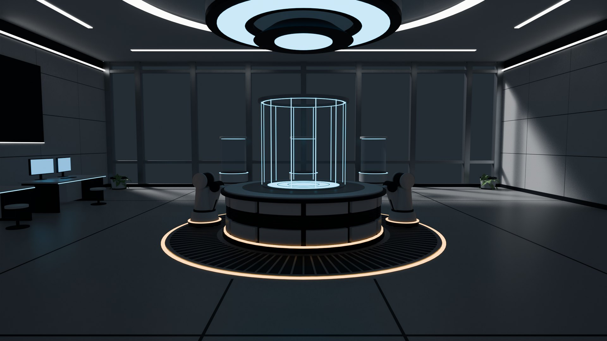
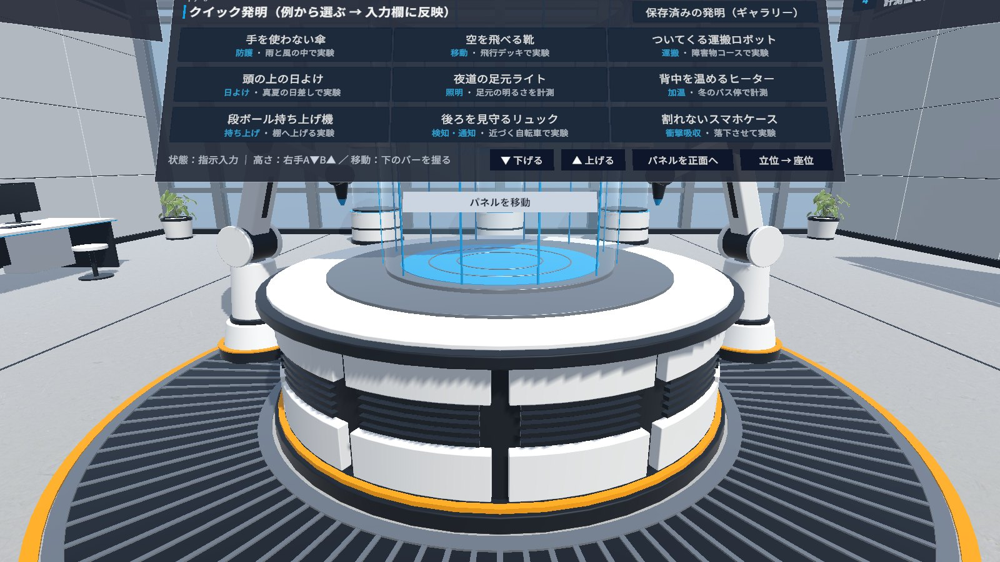
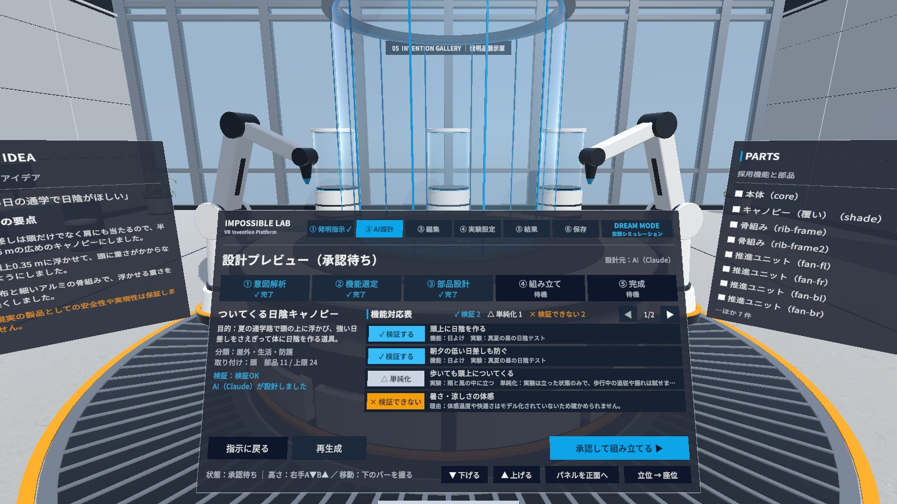
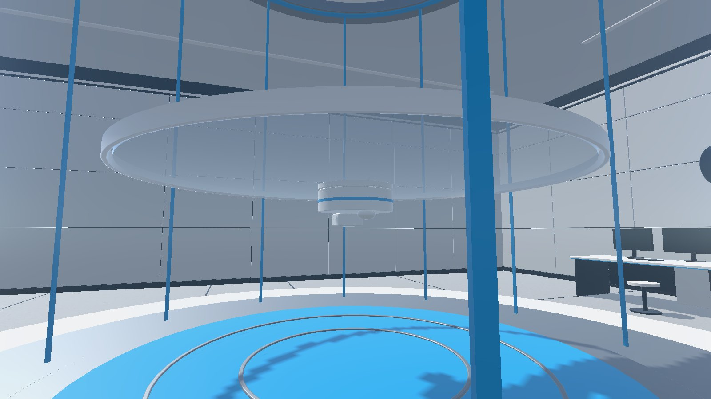
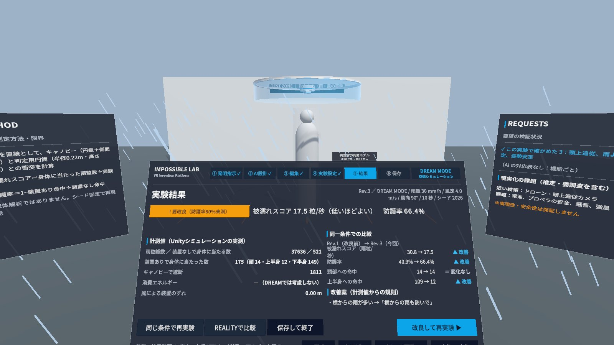

IMPOSSIBLE LAB
卒業制作発表 2026
発表者名
誰もが『開発者』に
なれる世界へ。
技術開発の入り口を開く VR 仮想試作アプリ
本日の問い：言葉だけで、発明を試して直せるか
開発の入り口
技術開発の入り口は、
技能と費用で閉じている
困りごとを持つ人ほど、
自分のアイデアを試せない。

設計形と仕組みを
決める
プログラム動きを
つくる
3Dモデル見た目を
つくる
IMPOSSIBLE LAB の体験
言葉で頼み、VRで試し、数値で直す
- 言葉で頼む困りごとを、日本語の文で伝える
- AIが設計する部品と機能を選び、検証できる要望を示す
- VRで試す発明台に組み上がった試作品を使う
- 数値で直す同じ条件で実験して比べ、言葉で改良する




改良の効果
「横からの雨も防いで」で、防護率が上がった
AIが側面カバーを足し、半径を広げた。Quest 実機でも 33% → 48%。
手を使わない雨具の防護率。雨量 30 mm/h・風速 4 m/s・同じ乱数で比較（Editor）。目標の 80% には未達。雨の動きは模式図。
雨具以外への広がり
雨具以外も、動きのある発明も作れる
ついてくる運搬ロボット
空を飛べる靴
近づくとフタが開くゴミ箱
技術構成
Quest単体で動き、AIは安全な経路でつなぐ
制作研究室と部品の 3D
- Blender 5.2
- CC0Poly Haven
- Git
体験Meta Quest 3S 単体で動作
- Unity 6
- Meta Quest 3S
- C#C#
- XROpenXR
- URPURP 17
- XRIXR Interaction Toolkit
発明DNA
JSON
検証
許可リスト
組み立て
実験
AIPC のプロキシ
- Claude API
- Node.js 22
- TypeScript
- Zod
- AIが書いたコードは実行しない
- APIキーはQuestに入れない
- 通信が切れても続けられる
38/38
AIの設計が、すべて検証を通過
日常の困りごと 40 件で評価。断るべき依頼 2 件は、2 件とも断った。
初心者による試用テストは、まだ実施していない。
事業のしくみ
試した証拠つきの発明を、企業へ届ける
利用者VRで発明・実験・改良
発明ライブラリ困りごと・数値・試した人数
企業設計・製造・販売を担う
還元売上の一部を発案者へ
収益の式
月額料金 × 契約社数
企業が払う、ライブラリの閲覧料
製品の売上 × 料率
製品化したときの成功報酬
構想段階。価格と料率は未検証。
卒業制作（今）
教育ワークショップ学校・科学館で開く
企業の課題募集企業がテーマを出す
発明ライブラリ企業が月額で閲覧
製品化の成功報酬売上の一部を還元
運営は製造しない。在庫を持たず、仲介とデータの提供に徹する。
IMPOSSIBLE LAB
誰もが『開発者』に
なれる世界へ。
言葉から、試して直せる発明が生まれた。
次に確かめること 初心者 3〜5 名による試用テスト